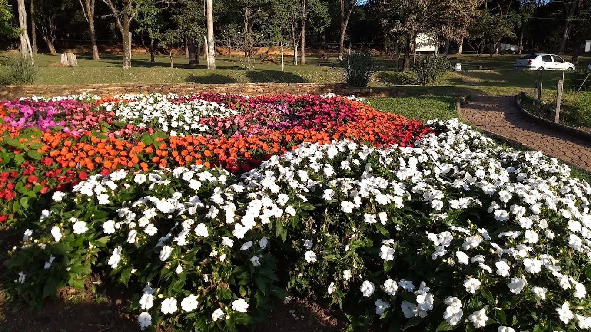
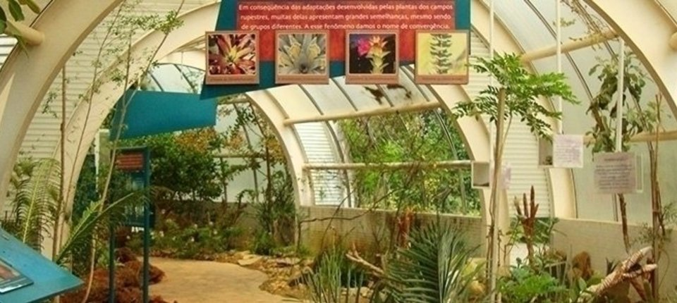
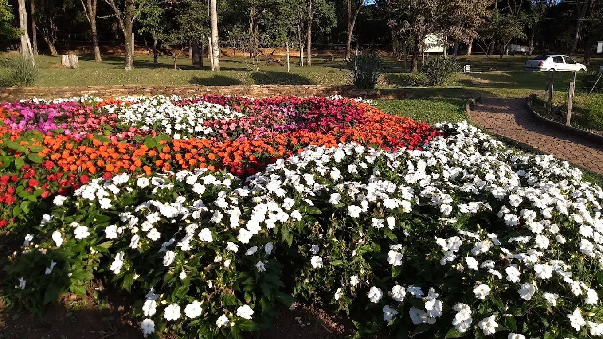
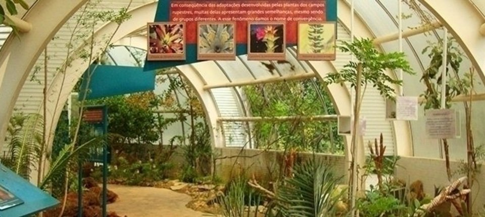

Bem-vindo

O Jardim Botânico (JB) foi aberto ao público, em 2001, como um espaço dedicado à conservação e exposição de coleções de plantas em Belo Horizonte. Desde 1991 passou a fazer parte da Fundação Zoo-Botânica de Belo Horizonte, constituindo-se num dos seus Departamentos. São mais de 1.200 espécies expostas em seis jardins temáticos, cinco estufas, cinco praças e lagos. Referência nas áreas de botânica aplicada e de fitossanitarismo.
Suas prioridades são ações e estudos voltados para a conservação da flora regional, com destaque para as espécies raras, endêmicas e ameaçadas de extinção. Além disso, o JB colabora na criação de políticas públicas e no desenvolvimento de programas educativos e de pesquisas, e é responsável por produzir mudas destinadas à arborização pública e à à arborização pública e à recuperação de áreas degradadas no município.
As coleções botânicas do JB são sempre ampliadas e melhoradas por meio de parcerias com instituições públicas e privadas. Com a experiência adquirida, o Jardim Botânico de BH tem uma atuação efetiva dentro da Rede Brasileira de Jardins Botânicos e, como uma de suas ações, vem estimulando a criação de outros jardins botânicos.
Na área de visitação do Jardim Botânico, há lagos com espécies aquáticas, praças e recantos para descanso e lazer. A flora brasileira pode ser melhor conhecida visitando as estufas temáticas da Mata Atlântica, Caatinga e Campo Rupestre, e também pode-se conhecer sobre a história evolutiva das plantas e sobre as formas de reprodução e dispersão de sementes nas Estufas de Evolução. Se o interesse é por plantas medicinais podem ser visitados o Jardim de Plantas Medicinais, Aromáticas e Tóxicas. E muito mais: árvores e palmeiras brasileiras, bromélias, folhagens, flores e trepadeiras atrativas e um jardim inteirinho só de plantas suculentas.
Galeria
 


